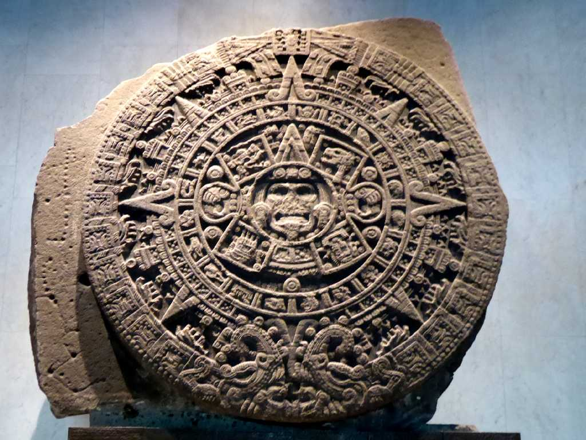
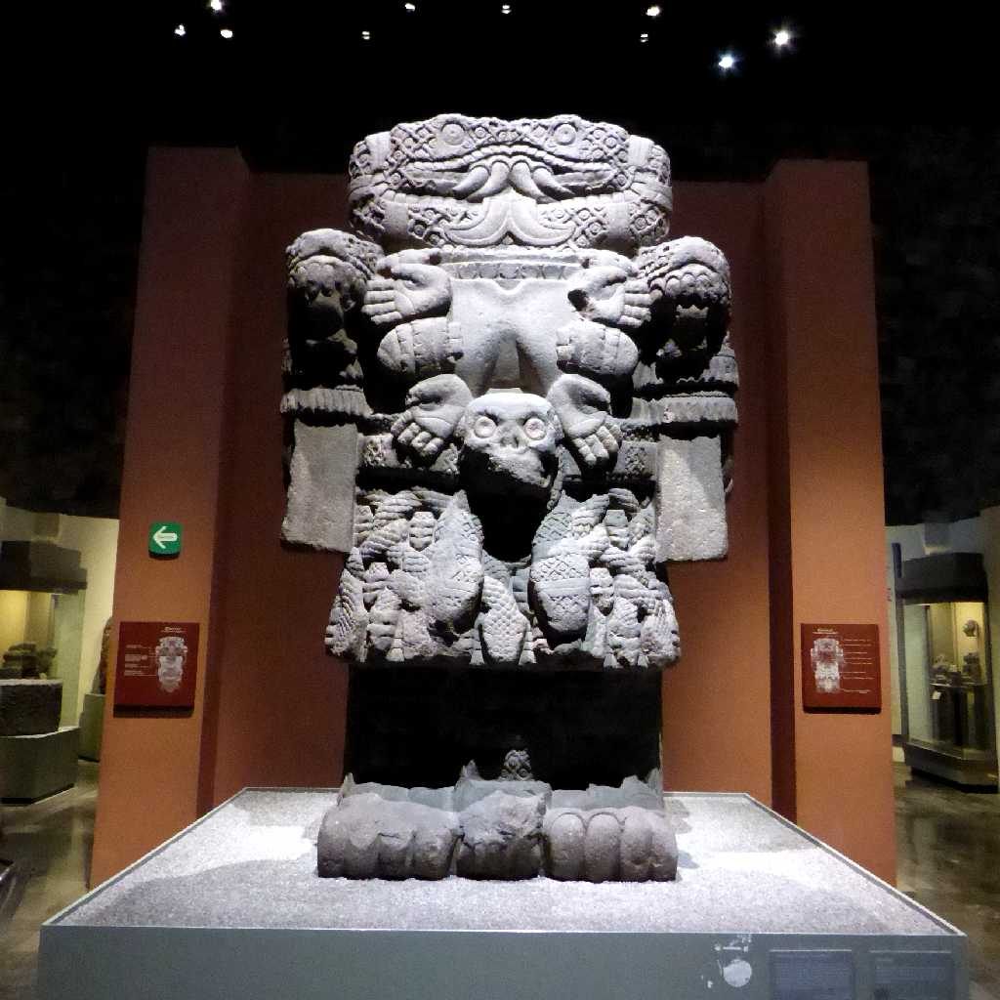
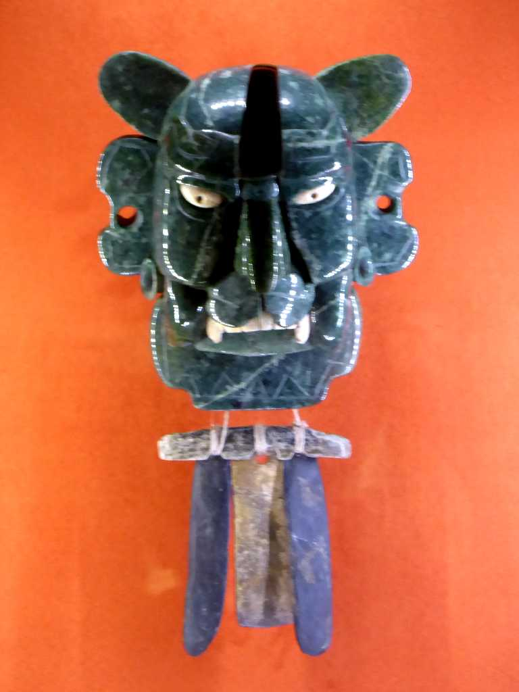
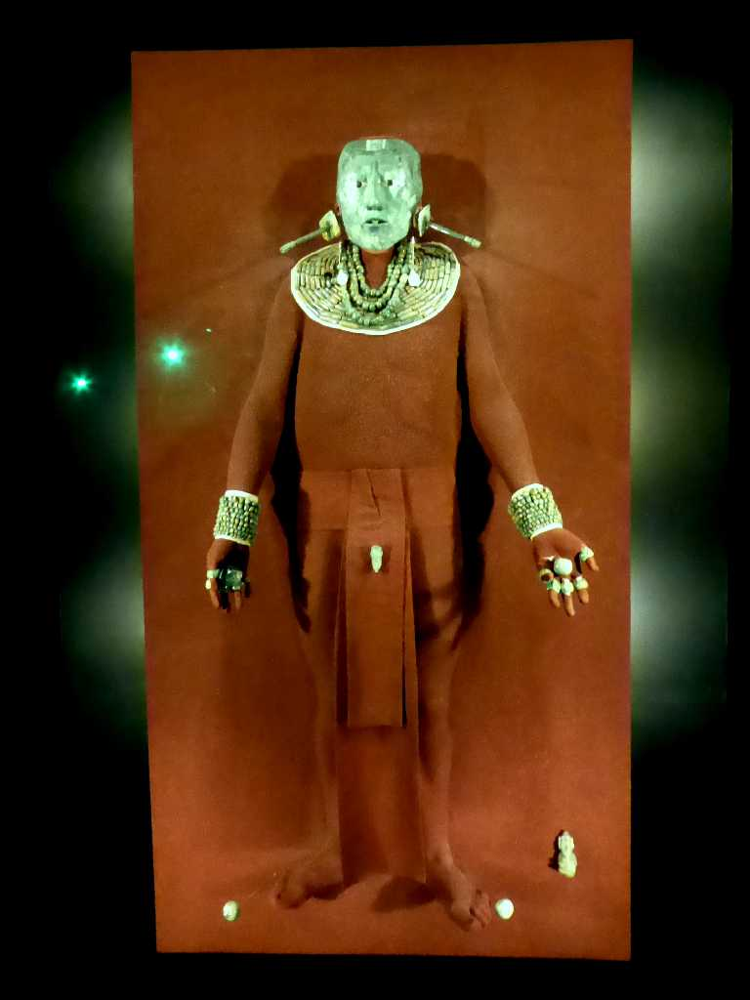

Piedra del Sol La Plaza Mayor Museo Nacional de Antropología
約４０年ぶりの再訪問 国立人類学博物館 アステカ文明 太陽の石

Coatlicue La Plaza Mayor Museo Nacional de Antropología
アステカ神話の地母神 蛇の淑女

Máscara del Dios Murciélago Monte Albán Museo Nacional de Antropología
サポテカ文明 コウモリ神の仮面 モンテアルバン出土

Máscara de Rey Pakal Palenque Mayan Museo Nacional de Antropología
マヤ文明 パカル王のデスマスク パレンケ出土
March 10 2020 Cabeza Olmeca La Venta Museo Nacional de Antropología
オルメカ文明 巨石人頭像